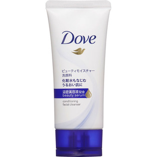

返回列表
产品名称：ダヴ ビューティモイスチャー洗顔料

ユニリーバ・ジャパン ダヴ ビューティモイスチャー洗顔料 ３０ｇ
メーカー ユニリーバ・ジャパン
JANコード 4902111736860
商品の特徴
キメを整える洗顔料
うるおってはずむ肌に
うるおい美容液配合
成分・分量
水
ワセリン
ココイルグリシンK
グリセリン
ヤシ脂肪酸K
ラウロアンホ酢酸Na
ヒドロキシプロピルデンプンリン酸
アクリレーツコポリマー
ラウリン酸
ラウラミドプロピルベタイン
ステアリン酸
パルミチン酸
ココイルイセチオン酸Na
イセチオン酸Na
ヤシ脂肪酸
ポリブテン
ポリクオタニウム-6
クエン酸
EDTA-4Na
BHT
メチルイソチアゾリノン
メチルクロロイソチアゾリノン
香料
用法及び用量
-